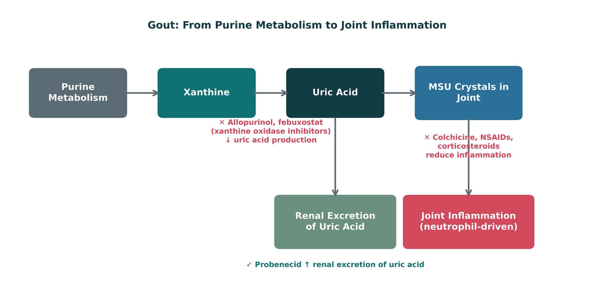
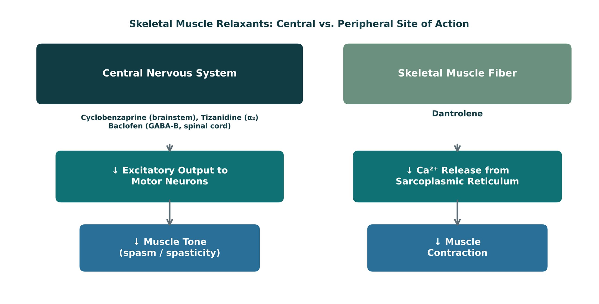
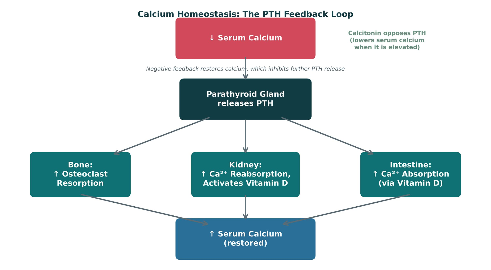
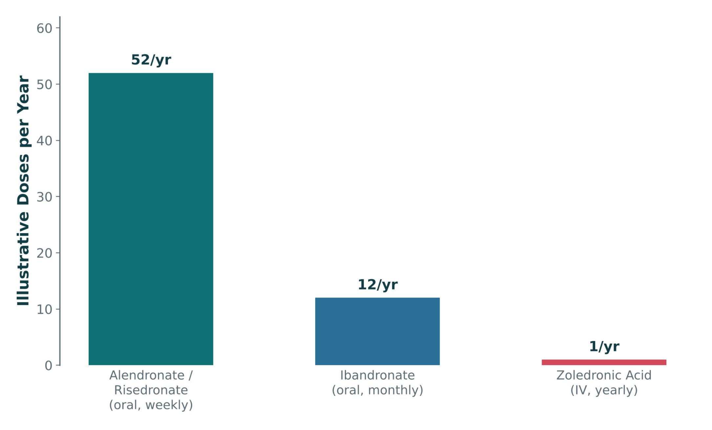
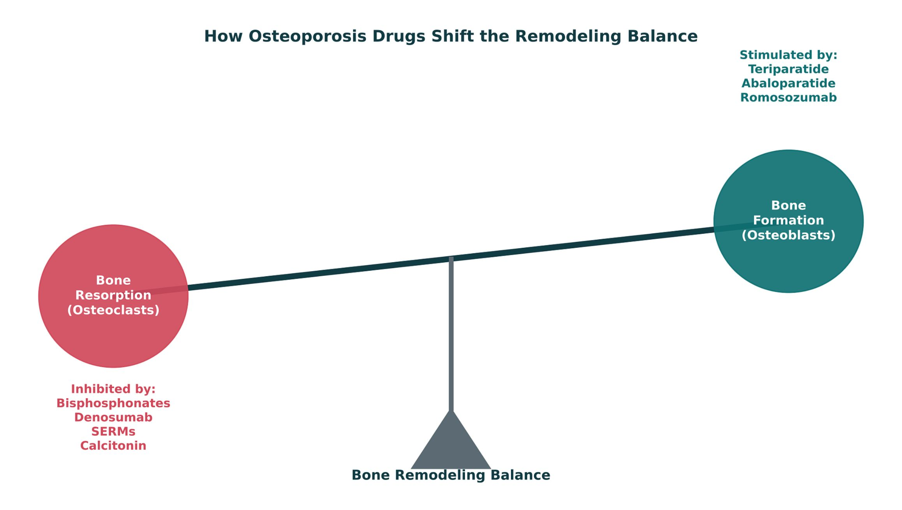

Unit 2 · Session 2 · Thu, Oct 29, 2026
4 parts · every fact cited to its slide or textbook page. About 170 minutes of focused study.
IO = syllabus unit objective · SO = this session's objectives slide.
| ID | Objective | Covered in |
|---|---|---|
| IO2.1 | Identify major pharmacologic classes used in the management of musculoskeletal conditions and describe their mechanisms of action. | Part 1 · Gout: Acute Flares & Urate-Lowering Therapy Part 2 · Skeletal Muscle Relaxants Part 3 · Bone Pharmacology & Osteoporosis |
| IO2.2 | Describe the indications, contraindications, adverse effects, and clinically significant interactions associated with medications used to treat musculoskeletal conditions. | Part 1 · Gout: Acute Flares & Urate-Lowering Therapy Part 2 · Skeletal Muscle Relaxants Part 3 · Bone Pharmacology & Osteoporosis |
| IO2.3 | Compare pharmacologic agents within and across therapeutic classes to distinguish clinically relevant differences in efficacy, safety, and use. | Part 1 · Gout: Acute Flares & Urate-Lowering Therapy Part 2 · Skeletal Muscle Relaxants Part 3 · Bone Pharmacology & Osteoporosis Part 4 · Putting It All Together: Musculoskeletal Toolkit |
| IO2.4 | Select appropriate pharmacologic therapy for common musculoskeletal conditions based on clinical presentation and patient-specific factors. | Part 1 · Gout: Acute Flares & Urate-Lowering Therapy Part 3 · Bone Pharmacology & Osteoporosis Part 4 · Putting It All Together: Musculoskeletal Toolkit |
| IO2.5 | Identify appropriate dosing, administration, and monitoring considerations for medications used in musculoskeletal conditions. | Part 1 · Gout: Acute Flares & Urate-Lowering Therapy Part 2 · Skeletal Muscle Relaxants Part 3 · Bone Pharmacology & Osteoporosis |
| IO2.6 | Explain important medication-use and safety information to patients receiving pharmacotherapy for musculoskeletal. | Part 2 · Skeletal Muscle Relaxants Part 3 · Bone Pharmacology & Osteoporosis |
| SO1 | Explain the pharmacologic treatment of acute and chronic gout, including representative generic agents. | Part 1 · Gout: Acute Flares & Urate-Lowering Therapy |
| SO2 | Classify skeletal muscle relaxants by mechanism and clinical use, including representative generic agents. | Part 2 · Skeletal Muscle Relaxants |
| SO3 | Explain the pharmacologic management of osteoporosis, including representative generic agents. | Part 3 · Bone Pharmacology & Osteoporosis |
| SO4 | Identify key contraindications, adverse effects, and drug interactions throughout. | Part 1 · Gout: Acute Flares & Urate-Lowering Therapy Part 2 · Skeletal Muscle Relaxants Part 3 · Bone Pharmacology & Osteoporosis |
| SO5 | Apply the full musculoskeletal pharmacology toolkit to integrated clinical scenarios. | Part 4 · Putting It All Together: Musculoskeletal Toolkit |

| Acute flare | Chronic management | |
|---|---|---|
| Goal | Control pain and inflammation now | Lower serum uric acid to prevent future flares |
| Agents | Colchicine, NSAIDs, corticosteroids | Allopurinol, febuxostat (↓ production); probenecid (↑ excretion) |
| When | At once — colchicine best within 24 h | Only after the flare resolves; start low, titrate to a urate target |
| Trap | ULT is not a flare treatment | Starting/changing ULT in a flare can prolong it; cover with prophylaxis 3–6 months |
How to tell them apart. Sources: S9; S11; S13; SG U2-R10
| Drug | Mechanism | Key safety point |
|---|---|---|
| Colchicine | Disrupts neutrophil microtubules | Narrow window; diarrhea dose-limiting; CYP3A4/P-gp inhibitors; renal/hepatic dosing |
| Allopurinol | Xanthine oxidase inhibitor (via oxypurinol) | HLA-B*58:01 hypersensitivity; renal dosing; ↓ dose with azathioprine/mercaptopurine |
| Febuxostat | Xanthine oxidase inhibitor (different structure) | Boxed warning: cardiovascular death |
| Probenecid | Uricosuric: blocks URAT1 reabsorption | Hydrate; avoid with uric acid stones or significant renal impairment |
| Pegloticase, rasburicase | Uricase: uric acid → allantoin | G6PD deficiency (hemolysis); infusion reactions; antibodies |
How to tell them apart. Sources: S10–S15
| Name pattern | Drug class | Examples |
|---|---|---|
| -ostat | Xanthine oxidase inhibitor | Febuxostat (allopurinol is the exception) |
| -ase | Enzyme (uricase) | Pegloticase, rasburicase |
| colchicine | Plant-derived alkaloid, no stem | Colchicine |
| probenecid, lesinurad-type | Uricosurics | Probenecid |
| -profen | Propionic-acid NSAIDs | Ibuprofen, naproxen |
| -sone, -olone | Corticosteroids | Prednisone, methylprednisolone |
How to tell them apart. Sources: S19
| Drug | Dose / PK | What sets it apart |
|---|---|---|
| Allopurinol | Start 100 mg/d; +100 mg every 2–5 weeks to <6 mg/dL (max 800); oxypurinol t½ 15 h | Pruritic rash 3%; AHS 2–4 weeks in; HLA-B 5801 (Han Chinese, Korean, Thai); cut azathioprine 75% |
| Colchicine | 1.2 mg then 0.6 mg; prophylaxis 0.6 mg once–twice daily; t½ 9 h | Within 36 h (guideline); not dialyzable; no longer given IV |
| Febuxostat | 40 or 80 mg daily; target <6.0 mg/dL | Safe in moderate CKD; for allopurinol intolerance |
| NSAIDs | Any except aspirin, salicylates, tolmetin | Aspirin ≤2.6 g/d retains urate |
| Pegloticase | 8 mg IV every 2 weeks; t½ 6–14 days | With methotrexate fewer reactions; flares first 3–6 months; avoid in G6PD deficiency |
| Probenecid (lesinurad withdrawn 2019) | 0.5 g/d → 1 g/d after 1 week | Start 2–3 weeks after an attack; high urine volume, pH > 6.0; ↓ penicillin secretion |
| Glucocorticoids in gout | Prednisone 30–50 mg/d × 1–2 days, taper 7–10 days; intra-articular triamcinolone | Rule out joint infection; good in CKD |
| Interleukin-1 inhibitors in gout | Anakinra 100 mg/day × 3 days; canakinumab 150 mg once | Not FDA approved for gout; option when standard drugs fail |
How to tell them apart. Sources: p. 695; p. 696; p. 697; p. 698

| What it is | Typical approach | |
|---|---|---|
| Muscle spasm | Sudden, involuntary contraction, often after acute injury | Centrally acting relaxant (e.g., cyclobenzaprine, short term) |
| Spasticity | Velocity-dependent ↑ tone from upper motor neuron injury | Baclofen, tizanidine; dantrolene if central agents unsuitable; botulinum toxin if focal |
| Rigidity | Constant ↑ tone, independent of velocity | Distinct pharmacologic approach |
How to tell them apart. Sources: S21; S23; S27; S33; S34
| Drug | Site · mechanism | Use | Watch for |
|---|---|---|---|
| Baclofen | Spinal cord · GABA-B agonist | Spasticity (MS, spinal cord injury); intrathecal for severe | Sedation, weakness; renal dosing; abrupt withdrawal: seizures, hyperthermia |
| Tizanidine | CNS · α2 agonist | Spasticity / tone | Hypotension, bradycardia, dry mouth, LFTs; CYP1A2 (ciprofloxacin, fluvoxamine) |
| Cyclobenzaprine | Brainstem · 5-HT2 antagonism (TCA-like) | Acute local spasm, 2–3 weeks | Sedation, anticholinergic (Beers); serotonin syndrome; no MAOIs |
| Carisoprodol | CNS (→ meprobamate) | Other central option | Schedule IV: dependence, misuse |
| Methocarbamol · metaxalone | CNS | Other central options | Less sedating than cyclobenzaprine |
| Chlorzoxazone | CNS | Other central option | Rare hepatotoxicity |
| Dantrolene | Muscle fiber · blocks RyR1 Ca²⁺ release | Malignant hyperthermia; spasticity; NMS | Hepatotoxicity, weakness |
| Botulinum toxin | Neuromuscular junction · blocks ACh release | Focal spasticity, dystonia | Local and temporary; repeat injections |
How to tell them apart. Sources: S23; S27–S35
| Name clue | Class | Examples |
|---|---|---|
| -curonium / -curium | Nondepolarizing neuromuscular blockers | Vecuronium, atracurium, cisatracurium |
| succinylcholine (-choline) | Depolarizing neuromuscular blocker | Succinylcholine |
| -azepam | Benzodiazepine (GABA-A) | Diazepam |
| cyclo- (tricyclic ring) | Tricyclic-like central relaxant | Cyclobenzaprine |
| -idine (imidazoline) | Central alpha-2 agonist | Tizanidine |
| No shared stem | GABA-B agonist (GABA analog) | Baclofen |
| -trolene (hydantoin derivative) | Blocks RyR1 in the muscle fiber | Dantrolene |
| -toxin | Blocks presynaptic ACh release | Botulinum toxin |
How to tell them apart. Sources: S38
| Drug | Dose / PK | What sets it apart |
|---|---|---|
| Baclofen | 15 mg twice daily → 100 mg daily; t½ 3–4 h; intrathecal | Less sedating than diazepam; withdraw very slowly; caution in pregnancy |
| Tizanidine | 2 mg every 6–8 h, max 36 mg/d | 1/10–1/15 of clonidine’s BP effect; hypotension 16–33%; CYP1A2; rebound hypertension |
| Diazepam | 4 mg/d → max 60 mg/d | GABA-A; works for spasm of any origin but sedates |
| Cyclobenzaprine | 20–40 mg/d in divided doses | Antimuscarinic; confusion, hallucinations; not for CP or cord injury |
| Carisoprodol, meprobamate | Schedule IV | Withdrawal syndrome after extensive use |
| Botulinum toxin | Injected; lasts weeks to months | Cleaves SNAP-25/synaptobrevin; dystonia, spastic disorders; black box: spread of toxin |
| Dantrolene | 25 mg/d → 100 mg four times daily; MH 1 mg/kg IV | RyR1 only; weakness, sedation, hepatitis |
| Gabapentin, pregabalin | Not covered in materials | Other centrally acting spasmolytic drugs: promising in MS spasticity |
How to tell them apart. Sources: p. 511; p. 512; p. 513
| Nondepolarizing (rocuronium, vecuronium, cisatracurium) | Depolarizing (succinylcholine) | |
|---|---|---|
| Normal neuromuscular function → mechanism of action | Compete with ACh at the nicotinic end-plate receptor | Agonist: depolarizes and holds the end plate (phase I), then desensitizes (phase II) |
| Skeletal muscle paralysis | Onset: rocuronium fastest (60–120 s) | Fasciculations, then paralysis < 90 s; lasts < 10 min |
| Neuromuscular response to cholinesterase inhibitors | Reversed (neostigmine); sugammadex for rocuronium/vecuronium | Phase I block augmented, not reversed |
| Cardiovascular effects | Vecuronium, cisatracurium, rocuronium: minimal; histamine release with atracurium/tubocurarine | Arrhythmias; bradycardia with a repeat dose |
| Neuromuscular blockade enhanced by | Volatile anesthetics (isoflurane most), aminoglycosides, myasthenia gravis, old age | Plasma cholinesterase variants (dibucaine number) |
| Key dangers | Residual block → hypoventilation | Hyperkalemia (burns, denervation); MH trigger; ↑ intraocular and intragastric pressure |
How to tell them apart. Sources: p. 500; p. 503; p. 504; p. 507; p. 508; p. 509



| Drug | Side of the balance | Route · schedule | Key safety point |
|---|---|---|---|
| Alendronate, risedronate | Antiresorptive (osteoclast apoptosis) | Oral, weekly | Full glass of water, upright 30 min, fasting; esophagitis |
| Ibandronate | Antiresorptive | Oral, monthly | Same oral rules |
| Zoledronic acid | Antiresorptive | IV, yearly | Flu-like acute-phase reaction; avoid if CrCl < 30–35 |
| Denosumab | Antiresorptive (RANKL antibody, mimics OPG) | Injection | Rebound vertebral fractures if stopped → bisphosphonate |
| Raloxifene (SERM) | Antiresorptive (estrogen-like on bone) | Oral | VTE; hot flashes; may ↓ breast cancer risk |
| Calcitonin | Antiresorptive (opposes PTH) | Not covered in materials | Not covered in materials |
| Teriparatide, abaloparatide | Anabolic (PTH analog) | Daily injection | 2-year lifetime limit, then antiresorptive |
| Romosozumab | Anabolic + antiresorptive (sclerostin antibody) | Injection | Boxed: MI, stroke, CV death |
How to tell them apart. Sources: S47–S56
| Rule | Why |
|---|---|
| Fasting, first thing in the morning, plain water | Absorption is under 1%; food, calcium, coffee and antacids cut it further |
| Full glass of water | Washes the tablet past the esophagus |
| Stay upright 30 minutes | Lowers esophageal contact time and irritation |
| Not with stricture, achalasia, or inability to sit up | Tablet would sit in the esophagus |
| Correct calcium and vitamin D first | Shutting down resorption can drop calcium |
How to tell them apart. Sources: S52; S53; SG U2-R13
| Name clue | Class | Examples |
|---|---|---|
| -dronate | Bisphosphonates (inhibit osteoclast resorption) | Alendronate, risedronate, ibandronate; zoledronic acid (zoledronate) |
| -sumab | Monoclonal antibodies (-mab) targeting bone | Denosumab (RANKL), romosozumab (sclerostin) |
| -fene | Selective estrogen receptor modulator (SERM) | Raloxifene |
| -tide (peptide) | PTH analogs (anabolic) | Teriparatide, abaloparatide |
| No shared stem | Calcitonin (hormone) | Calcitonin |
How to tell them apart. Sources: S62
| Regulator / drug | What it does | Clinical use or point |
|---|---|---|
| Parathyroid hormone (PTH) | ↑ serum calcium, ↓ phosphate; ↑ 1,25(OH)₂D; RANKL via osteoblasts | Intermittent PTH 1-34 (teriparatide) is anabolic; rhPTH 1-84 for hypoparathyroidism |
| Vitamin D (1,25-dihydroxyvitamin D) | ↑ gut calcium and phosphate absorption | Vitamin D preparations: D3 preferred; calcitriol when speed matters |
| Fibroblast growth factor 23 | ↓ phosphate reabsorption and 1,25(OH)₂D | Burosumab (anti-FGF23) for X-linked hypophosphatemia |
| Calcitonin (secondary regulator) | Inhibits osteoclasts; ↓ calcium and phosphate | Salmon form lasts 40–50 min; Paget, hypercalcemia, osteoporosis (weaker) |
| Glucocorticoids | Net bone loss | Common cause of adult osteoporosis; treat sarcoid/vitamin D hypercalcemia |
| Estrogens | Reduce PTH-driven resorption | Prevent postmenopausal loss; long-term use out of favor → SERMs |
| Sclerostin antibodies (romosozumab) | Unblock Wnt → osteoblasts; ↓ resorption | 1 year, then antiresorptive; MI/stroke boxed warning |
| Calcimimetics (cinacalcet, etelcalcetide) | Activate the calcium-sensing receptor → ↓ PTH | Secondary hyperparathyroidism in CKD; cinacalcet 30 → 90 mg |
| Thiazide diuretics | ↓ renal calcium excretion | Idiopathic hypercalciuria stones; avoid loop diuretics there |
| Fluoride | Stabilizes hydroxyapatite | Dental caries; not FDA approved for osteoporosis (fractures not reduced) |
| Strontium ranelate | ↓ resorption, ↑ formation | Europe only; not approved in the USA |
How to tell them apart. Sources: p. 813; p. 815; p. 816; p. 817; p. 818; p. 819; p. 820; p. 821; p. 824; p. 825
| Disorder | Drug approach | Pearl |
|---|---|---|
| Hypercalcemia | Saline diuresis 500–1000 mL/h, then furosemide; pamidronate 60–90 mg or zoledronate 4 mg IV; calcitonin | Calcitonin acts in 4–6 h; gallium nitrate seldom used; glucocorticoids for sarcoid, vitamin D, myeloma |
| Hypocalcemia | IV 10% calcium gluconate slowly; oral 1000–1500 mg elemental/day; calcitriol 0.25–1 mcg | Calcium carbonate 40% calcium (with meals if achlorhydric) vs. citrate 21%; check magnesium |
| Hyperphosphatemia | Diet + binders: sevelamer, lanthanum, calcium | Aluminum binders sparingly (bone disease) |
| Hypophosphatemia | Oral phosphate | Long term: weakness, osteomalacia |
| Primary hyperparathyroidism | Surgery; cinacalcet if not a candidate | Rule out familial hypocalciuric hypercalcemia |
| Hypoparathyroidism | Calcitriol + calcium; rhPTH 1-84 | Hypercalciuria limits standard therapy |
| Nutritional vitamin D deficiency or insufficiency | D2 or D3 1000–4000 IU/d or 50,000 IU/week | 25(OH)D > 12 ng/mL prevents rickets; 20–30 ng/mL target |
| Chronic kidney disease | Calcitriol, doxercalciferol, paricalcitol; binders | Keep calcium × phosphate < 55 |
| Intestinal osteodystrophy (malabsorption) | High-dose vitamin D 25,000–50,000 IU | Osteoporosis + osteomalacia |
| Idiopathic hypercalciuria | Hydrochlorothiazide up to 50 mg twice daily | Not loop diuretics; allopurinol an alternative |
| Paget disease of bone | Bisphosphonates (higher doses), calcitonin | Follow alkaline phosphatase |
| Enteric oxaluria | Calcium carbonate 1–2 g/day | Calcium binds gut oxalate |
How to tell them apart. Sources: p. 822; p. 823; p. 824; p. 825; p. 826; p. 829
| Drug | Mechanism (your answer) |
|---|---|
| Methotrexate | Inhibits dihydrofolate reductase (Session 1) |
| Colchicine | Disrupts neutrophil microtubule formation |
| Dantrolene | Decreases SR calcium release |
| Baclofen | GABA-B agonist (spinal cord) |
| Teriparatide | PTH analog — stimulates osteoblast bone formation |
| Denosumab | RANKL inhibitor — blocks osteoclast formation |
| Abatacept | Blocks T-cell costimulation (Session 1) |
| Spironolactone (as used for hirsutism/acne) | Blocks the androgen receptor (antiandrogen effect) |
How to tell them apart. Sources: SG U2-M
| Patient | First-line class | Biggest safety check |
|---|---|---|
| A · Acute gout flare, first presentation | Colchicine, NSAID, or corticosteroid | Defer ULT; colchicine renal/hepatic dosing and CYP3A4/P-gp inhibitors |
| B · Chronic RA, inadequately controlled | Add/escalate DMARD (biologic) | Infection: TB and hepatitis screening; fever = infection until proven otherwise |
| C · Osteoarthritis + CKD | Acetaminophen or topical NSAID | Avoid oral NSAIDs (AKI) |
| D · Postmenopausal osteoporosis, high fracture risk | Anabolic agent first, then antiresorptive | Teriparatide 2-year limit; romosozumab boxed CV warning; renal function |
How to tell them apart. Sources: S64; S59; S55; S69–S71
Every term, mechanism, drug, and number. Hide the answers and quiz yourself; tap a blurred answer to peek.
| Prompt | Answer |
|---|---|
| Gout chain | Purine → xanthine → uric acid (xanthine oxidase) → MSU crystals → neutrophil flareS5; S6 |
| Raise uric acid | Purine/fructose diet, beer, thiazide/loop diuretics, CKDS5 |
| Flare drugs | Colchicine, NSAIDs, corticosteroidsS9 |
| Urate-lowering drugs | Allopurinol, febuxostat (↓ production); probenecid (↑ excretion)S9; SG U2-R9 |
| ULT in a flare? | Never start or change — it can prolong the flareS9; SG U2-R10 |
| ULT prophylaxis | Colchicine or NSAID for 3–6 monthsS13 |
| Colchicine | Microtubules · best within 24 h · diarrhea · CYP3A4/P-gpS10; S11 |
| Allopurinol | XO inhibitor (oxypurinol) · first-line · HLA-B*58:01 · ↓ dose renal, azathioprineS12; S13 |
| Febuxostat | XO inhibitor · boxed CV deathS13 |
| Probenecid | URAT1 block · hydrate · no uric acid stones/renal impairmentS14; S15 |
| Pegloticase, rasburicase | Uricase → allantoin · IV · no G6PD deficiencyS15 |
| Spasticity vs. rigidity | Velocity-dependent (UMN) vs. constant toneS21 |
| Central relaxants | Cyclobenzaprine, tizanidine, baclofen (+ carisoprodol, methocarbamol, metaxalone, chlorzoxazone)S23 |
| Peripheral relaxants | Dantrolene (muscle), botulinum toxin (junction)S23 |
| Baclofen | GABA-B · MS/spinal cord spasticity · intrathecal · withdrawal seizures, hyperthermiaS27; S28 |
| Tizanidine | α2 agonist · hypotension, LFTs · no ciprofloxacin/fluvoxamineS29; S30 |
| Cyclobenzaprine | Brainstem 5-HT2 · TCA-like anticholinergic · 2–3 weeks · BeersS31; S32 |
| Carisoprodol | → meprobamate · Schedule IVS33 |
| Dantrolene | RyR1 · malignant hyperthermia, NMS · hepatotoxicS34; S35 |
| Malignant hyperthermia triggers | Volatile anesthetics, succinylcholineS35 |
| Osteoporosis risk | Age, estrogen loss, glucocorticoids, low Ca/vitamin D, inactivityS46 |
| PTH loop | ↓ Ca → PTH → bone resorption, renal reabsorption, vitamin D gut absorptionS43; SG U2-R12 |
| Intermittent vs. continuous PTH | Formation vs. resorption (↑ RANKL)S41 |
| Bisphosphonate schedules | Alendronate/risedronate weekly · ibandronate monthly · zoledronic acid yearly IVS47; S49 |
| Bisphosphonate counseling | Full glass of water, fasting, upright 30 minS52; S53; SG U2-R13 |
| Bisphosphonate limits | CrCl < 30–35 · ONJ, atypical femur fracture · holiday after 3–5 yS48 |
| Denosumab | RANKL antibody · stopping → rebound vertebral fracturesS54; S55 |
| Teriparatide | PTH 1-34 · anabolic · 2 years lifetimeS55; SG U2-M |
| Romosozumab | Sclerostin antibody · builds + limits resorption · boxed MI/stroke/CV deathS54; S55 |
| Raloxifene | SERM · VTE, hot flashes · ↓ breast cancer riskS54; S55 |
| Name stems | -ostat XO · -ase uricase · -curonium NMB · -dronate · -sumab · -fene SERM · -tide PTHS19; S38; S62 |
| Allopurinol dosing | Start 100 mg/d (≤50 in CKD); titrate to uric acid <6 mg/dL; max 800p. 695 |
| Allopurinol hypersensitivity | 2–4 weeks in; stop at first rash; screen HLA-B 5801 in Han Chinese, Korean, Thaip. 696 |
| Colchicine flare dose | 1.2 mg, then 0.6 mg 1 h laterp. 696 |
| Gout steroid option | Prednisone 30–50 mg/d × 1–2 days, taper 7–10 days; good in CKDp. 698 |
| Pegloticase dose | 8 mg IV every 2 weeks; premedicatep. 698 |
| Probenecid | Start 2–3 weeks after an attack; urine pH > 6.0; ↓ penicillin secretionp. 698 |
| Dantrolene in MH | 1 mg/kg IV, repeat; RyR1 (heart uses RyR2)p. 513 |
| Succinylcholine dangers | Hyperkalemia (burns, denervation, trauma); MH triggerp. 508 |
| Sugammadex | Reverses rocuronium/vecuronium; backup contraception 7 daysp. 509; p. 510 |
| Bisphosphonate doses | Alendronate 70 mg/wk · risedronate 35 mg/wk · ibandronate 150 mg/mo · zoledronate 5 mg/yrp. 818 |
| Teriparatide · abaloparatide | 20 mcg · 80 mcg SC daily; 2 yearsp. 827 |
| Raloxifene | Spine, not hip; VTE; no hot-flush reliefp. 827 |
| Vitamin D | 600 IU/d adults; deficiency 1000–4000 IU/d or 50,000 IU/weekp. 825 |
First, the lecture's own 15 knowledge checks — exactly as written. Then original PANCE-style questions. Tap an answer to reveal the explanation.
Tick only what you could teach out loud. Saved on this device.